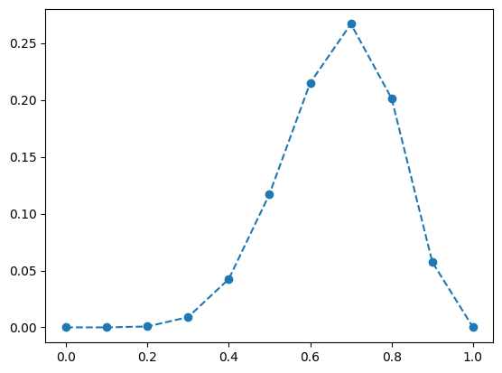

Bayesian Machine Learning
These notes are based on the first lecture on Bayesian ML by Andrew Gordon Wilson, NYU, 2023.
Notes
This lecture was mostly about motivating the need for Bayesian ML. What does it mean to think in a probabilistic way?
Here are some discussions:
Which model would you choose?
- y = a_0 + a_1 * t
- y = sum from 0 to 3 (a_i * t^i)
- y = sum from 0 to 100 (a_i * t^i)
Prof chooses c. because it is a larger parameter space. Should explore more.
Should data size be relevant to size of a model?
- Interesting question. Lots of discussions about this.
- The issue of overfitting is a problem, but it is known that overparametrized models like NNs don’t overfit, and are able to respect our inductive biases
The case for epistemic uncertainity modelling.
- It is about modelling and improving our knowledge. More data should reduce uncertainity.
- Every problem modelling has assumptions. No need to be afraid to declare them. Bayesian methods ar more principled in this regard.
- We need a modelling technique to represent our honest beliefs
- Should be able to support a large hypothesis space, infinite parameters, and be able to learn from small data.
Marginilaztion vs. Optimization
- Marginilaztion aka Bayesian Model Average.
- Instead of using one value for the weights, we use a distribution of weights.
Following are three problems to illustrate probabilistic modelling:
Study A: Regression - What should be the loss function to minimize? - L2 loss is equivalent to assuming a gaussian error model, that error is normally distributed around the true value. -
1. Linear Regression
Suppose we have a dataset D = {x_i, y_i} for i = 1, …, N. We fit a model \(y = f_w(x) + \epsilon\), where w are the parameters of the model.
Then we have the following:, explain these terms.
\(p(y(x_0) | x_0, D, \sigma^2) = \int p(y(x_0) | x_0, w, \sigma^2) p(w | D, \sigma^2) dw\)
In a frequentist setting, we would have to choose a single value for w, i.e. \(p(w | D, \sigma^2)\) is a delta function containing all mass at a single point.
2: Coin Tossing
Suppose we toss a coin N times and observe m tails. What is the probability that the next toss will be a tail?
Answer:
One trivial answer is \(\frac{m}{N}\). This is actually the frequentist estimation, which seems reasonable but inadequate for low m and N. If m = 1 and N = 1, shall we always predict tails?
Let us try another way that incorporates the Data and our prior beliefs. To solve this in a Bayesian way:
Bayesian Answer:
We ask what is the likelihood and what is the prior?
Let \(\lambda\) be the probability of getting a tail.
We first try to model the likelihood of the data. \(p(D | \lambda) = \prod_{i=1}^N p(x_i | \lambda) = \binom{N}{m}\lambda^m (1 - \lambda)^{N-m}\) This is a binomial distribution, because it is a product of Bernoulli distributions.
The naive way to go from here is the find \(\lambda\) that maximizes the likelihood. This is called the maximum likelihood estimate (MLE). We can differentiate this likelihood and set it to zero to find the maximum, which turns out to at \(\lambda = \frac{m}{N}\). We run into the frequentist problems for low data.
As this model doesn’t seem to be agreeing with our intuition when we have observed very few data points. We need a way to give information about our prior beliefs, and weight of the data points. To make life easy, we can choose the prior to resemble a Binomial function. Let’s choose the Beta distribution \(p(\lambda) = \text{Beta}(\lambda | a, b) = \frac{\lambda^{a-1} (1 - \lambda)^{b-1}}{B(a, b)}\), where \(B(a, b)\) is the beta function, a is no. of tails and b is no. of heads.
Let us plot the beta distribution for various values of \(a\) and \(b\).
import matplotlib.pyplot as plt
import numpy as np
a = 7
b = 3
x = np.linspace(0, 1, 1000)
y = (x**(a-1)) * ((1-x)**(b-1))
plt.plot(x, y)[<matplotlib.lines.Line2D at 0x7fedaa03b640>]
This prior quantifies our belive that it is likely for it to be tail than head from the observations (a = tails, b = heads). We observe that the mode is at 7/10 to represent this fact. Play with different values of a and b to see how the distribution changes.
Now to answer the probability of tails given D observations, we need to compute the posterior \(p(\lambda | D)\). We can do this by using Bayes’ rule:
\(p(\lambda | D) = \frac{p(D | \lambda) p(\lambda)}{p(D)}\), where \(p(D) = \int p(D | \lambda) p(\lambda) d\lambda\) is the marginal likelihood.
3. Urn Problem
There are 11 urns with 10 balls each. The i-th urn has i black balls. At every turn, we pick an urn at random and draw a ball with replacement. Suppose we observe m black balls after N turns. We can now ask: 1. What is the probability that the next ball is black? 2. What is the probability that the next ball is from the i-th urn?
Answer:
The trivial way to answer these questions partly would be: 1. Probability of the next ball being black is \(\frac{m}{N}\). 2. Let us say m = 3 and N = 10. Then we can say that its most likely we are picking from the 4th urn, because 4th urn has p(m) = 3 / 10. But can’t trivially assign a probability to this 4th urn.
But we can see that this is not a very good or complete answer. To obtain the probabilities for each urn, we need a Bayesian approach.
Bayesian Answer:
We need to find the posterior \(p(u | D)\), where u is the urn number \(u \in \{0..11\}\). D is the dataset, and since order doesn’t matter, D is just two integers m and N.
Lets start by modelling the likelihood \(p(m, N| u)\). We can again model this as a binomial distribution, i.e. product of N Bernoulli distributions with \(p = \frac{u}{10}\). Hence, we have \(p(m| u, N) = \binom{N}{m} (\frac{u}{10})^m (1 - \frac{u}{10})^{N-m}\).
Using Bayes’ rule, we have \(p(u | m, N) = \frac{p(m | u, N) p(u)}{p(m | N)}\), where \(p(m | N) = \sum_{u=0}^{10} p(m | u, N) p(u)\) is the marginal likelihood.
Suppose m = 3 and N = 10, we have